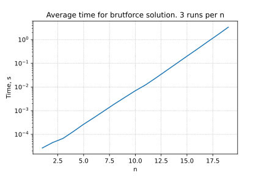

Two way partitioning problem
Intuition

Suppose, we have a set of n objects, which are needed to be split into two groups. Moreover, we have information about the preferences of all possible pairs of objects to be in the same group. This information could be presented in the matrix form: W \in \mathbb{R}^{n \times n}, where \{w_{ij}\} is the cost of having i-th and j-th object in the same partitions. It is easy to see, that the total number of partitions is finite and equals to 2^n. So this problem can in principle be solved by simply checking the objective value of each feasible point. Since the number of feasible points grows exponentially, however, this is possible only for small problems (say, with n \leq 30). In general (and for n larger than, say, 50) the problem is very difficult to solve.
For example, bruteforce solution on MacBook Air with M1 processor without any explicit parallelization will take more, than a universe lifetime for n=62.

Despite the hardness of the problems, there are several ways to approach it.
Problem
We consider the (nonconvex) problem
\begin{align*} & \min_{x \in \mathbb{R}^n} x^\top W x,\\ \text{s.t. } & x_i^2 = 1, \; i= 1, \ldots, n\\ \end{align*}
where W \in \mathbb{R}^n is the symetric matrix. The constraints restrict the values of x_i to 1 or −1, so the problem is equivalent to finding the vector with components \pm 1 that minimizes x^\top W x. The feasible set here is finite (it contains 2^n points), thus, is non-convex.
The objective is the total cost, over all pairs of elements, and the problem is to find the partition with least total cost.
Simple lower bound with duality
We now derive the dual function for this problem. The Lagrangian is
L(x, \nu) = x^\top W x + \sum\limits_{i=1}^n \nu_i (x^2_i − 1) = x^\top (W + \text{diag}(\nu))x − \mathbf{1}^\top \nu.
We obtain the Lagrange dual function by minimizing over x:
\begin{split} g(\nu) &= \inf_{x \in\mathbb{R}^n} x^\top (W + diag(\nu))x − \mathbf{1}^\top \nu = \\ &= \begin{cases} \mathbf{1}^\top \nu, &W + \text{diag}(\nu) \succeq 0 \\ -\infty, &\text{ otherwise} \end{cases} \end{split}
This dual function provides lower bounds on the optimal value of the difficult problem. For example, we can take any specific value of the dual variable
\nu = −\lambda_{min}(W)\mathbf{1},
This yields the bound on the optimal value p^*:
p^* \geq g(\nu) \geq −\mathbf{1}^\top \nu = n \lambda_{min}(W)
Question Can you obtain the same lower bound without knowledge of duality, but using the idea of eigenvalues?
Code
Open In Colab{: .btn }
References
- Convex Optimization book by Stephen Boyd and Lieven Vandenberghe.